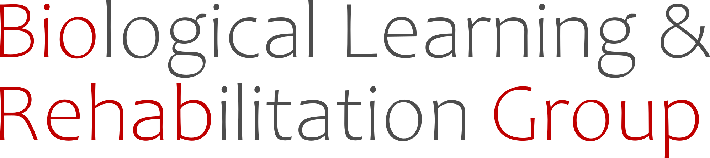

I head the Biological Learning and Rehabilitation group.
We work at the interface of three desciplines: engineering, movement science, and neurorehabilitation. We are an interested in the science and engineering of neurorehabilitation.
We have three areas of focus: (a) Clinically relevant neurorehabilitation technology, (b) Quantitative human movement analysis, and (c) precision neurorehabilitation.